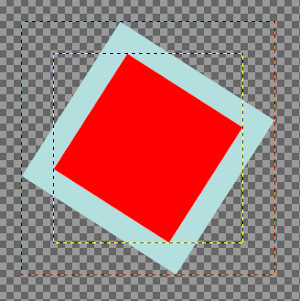
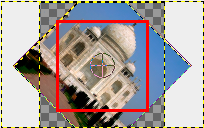
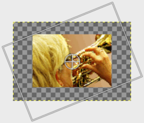
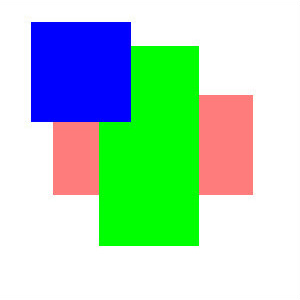
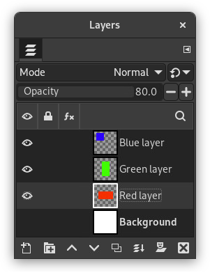
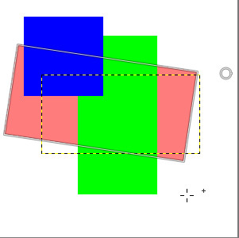
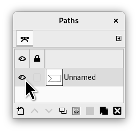
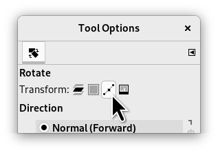

To access these tools, select → from the main menu.
Dentro do menu de ferramentas de Transformação, você encontrará oito ferramentas para modificar a apresentação da imagem ou de um elemento da imagem, seleção, camada ou vetor. Cada ferramenta de transformação tem um diálogo de opções e um diálogo de informação para configurar os parâmetros.
This category includes the following tools:
-
Move;
-
Crop;
-
Essas opções estão descritas em Opções em comum das ferramentas de transformação
-
Essas opções estão descritas em Opções em comum das ferramentas de transformação
-
Flip;
Algumas opções são compartilhadas por várias das ferramentas de transformação. Nós as descreveremos aqui. Opções mais específicas serão descritas por cada ferramenta.
- Transformar
-
O GIMP oferece três botões que deixam você selecionar em qual elemento a ferramenta de transformação vai atuar.
![[Nota]](images/note.png)
Nota The Transform option for a tool persists after changing tools.
-
 Camada
Camada
-
Quando você ativa o primeiro botão na seleção de “o que transformar” -
 a ferramenta vai operar na camada ou objeto de desenho (máscara, canal, ...) ativo. Se não existir nenhuma seleção, toda a camada será transformada.
a ferramenta vai operar na camada ou objeto de desenho (máscara, canal, ...) ativo. Se não existir nenhuma seleção, toda a camada será transformada. -
 Seleção
Seleção
-
Quando você ativa o segundo botão,
 , a ferramenta vai afetar a própria seleção: o seu contorno será transformado. (na verdade, o canal interno do GIMP que contém a seleção).
, a ferramenta vai afetar a própria seleção: o seu contorno será transformado. (na verdade, o canal interno do GIMP que contém a seleção). -
 Vetor
Vetor
-
When you activate the third button, the tool works on the active path only.
-
 Imagem
Imagem
-
When you activate the fourth button, the transformation is applied to all layers.
Figura 14.87. Exemplo para cortar com proporção

Você pode usar as Guias para ajudar a posicionar a área de corte. Certifique-se de que a opção → está ligada.

Fourth button pressed, Rotate tool applied. Note the adaptation of layer sizes.
-
- Direção
-
Esta opção configura a direção em que a transformação atuará
O modo “Normal (Para frente)” transformará a imagem ou seleção como você espera que aconteça: você usa as alças de manipulação para realizar a transformação desejada. A imagem ou camada será transformada para a posição em que você coloca a pré-visualização ou a grade (se você usar uma grade, veja abaixo).
O modo “Corretivo (Para trás)” inverte a direção. Quando não existia a pré-visualização da imagem para transformações, era usado principalmente com a transformação de rotação para permitir nivelar objetos inclinados em fotografias: sem a pré-visualização ativada, você alinha a grade com o objeto inclinado e usa a transformação reversa. Isso ainda pode ser útil em alguns casos. Com a pré-visualização, o modo Corretivo continua sendo a melhor forma, por exemplo, de normalizar uma área que está num plano inclinado numa foto (como uma capa de livro, uma pintura numa parede, etc...) de forma que ele se torne o assunto principal de uma imagem: Na transformação de perspectiva mova as quatro alças para os cantos do objeto em questão, e use o modo Corretivo. Veja Seção 4.5, “Rotacionar” e Seção 4.8, “Perspectiva”
You can link these two options in Rotate, Scale, Perspective, Unified transform and Handle transform tools. This allows moving handles without affecting the transformation, letting you manually readjust their position.
- Interpolação
-
This drop-down list lets you choose the method of the transformation. The chosen method influences the speed and quality, though it also depends on the image and the type of transformation what will work best in each case.
- Nenhum
-
A cor de cada pixel é copiada diretamente do pixel vizinho mais próximo na imagem original. Isso normalmente resulta em imagens serrilhadas (o efeito de “escadinha”) é uma imagem pobre. É o método mais rápido, embora nos computadores atuais isso não faça tanta diferença. É mais útil para se obter efeitos especiais, ao se aumentar o tamanho de imagens para a obtenção de uma imagem pixelada “retrô”, e para fins de computação gráfica quando outros métodos tem que ser comparados com esse. Em alguns lugares é chamada de “Vizinho mais próximo”.
- Linear
-
A cor de cada pixel é computada levando-se em conta os quatro pixels mais próximos na imagem original. Isso gera um resultado satisfatório e é uma boa relação entre velocidade e qualidade. Algumas vezes este método é chamado de “Bilinear”.
- Cúbica
-
A cor de cada pixel é computada levando-se em conta os oito pixels mais próximos na imagem original. Em geral dá um bom resultado, mas naturalmente leva mais tempo. Algumas vezes é chamada de “Bicúbica”.
- LoHalo, NoHalo
-
These methods perform a high quality interpolation. Use the NoHalo method when you downscale an image to less than a half of the original size and the LoHalo method when you do not reduce the size much (rotate, shear).
A “Halo” is an artifact that can be created by interpolation. It reminds of the halo you can get when using Seção 4.8, “Sharpen (Unsharp Mask)”. Here is a note from Nicolas Robidoux, the creator of these quality samplers for GEGL and GIMP:
"If haloing is not an issue with your content and use case,
which of the two should you try first?
(Clearly, if you want to minimize haloing, NoHalo is the
ticket.)
If you are reducing an image, LoHalo is generally better.
If your transformation is not an all around reduction, for
example if you enlarge, rotate or apply a perspective
transformation that keeps portions of the image at the same or
higher resolution, I generally prefer NoHalo. This preference,
however, changes depending on the image content. If, for
example, the image contains text or text-like objects or has
significant areas with only a handful of different colours,
like old school pixel art, I’d switch to LoHalo. Likewise if
the image is quite noisy or marred by compression artifacts
(as are most JPEGs found on the web). Conversely, if the
image is noise free, very slightly blurry (meaning that when
pixel peeking, the lines and interfaces are smeared over two
or more pixels), and there are delicate skin tones to be
preserved, I’d try NoHalo first. Actually, if I find that
colours have not been preserved nicely after transforming an
image with LoHalo, I’d immediately switch to NoHalo, even if
reducing.
In any case, these recommendations should not be taken as
gospel. I still have much to learn and figure out. For
example, how best to deal with transparency and different
colour spaces is something I’m likely to be thinking about
for a while."
Nota Você pode configurar o método padrão de interpolação na guia de Opções de Ferramentas do diálogo de Preferências.
- Cortar
-
Após a transformação, a imagem pode ser maior. Esta opção vai cortar a imagem transformada, limitando-a ao tamanho da imagem original.
Você pode escolher entre várias formas de corte:
- Ajustar
-
Figura 14.88. Imagem original usada para os exemplos

Imagem original
Rotação aplicada com “Ajustar”

Rotação aplicada com “Ajustar” e a tela de pintura aumentada para o tamanho da camada.
Com Ajustar: a camada é aumentada para conter toda a camada rotacionada. A nova borda de camada é visível; a camada toda se torna visível ao se usar o comando →
- Cortar
-
Com Cortar: tudo o que ultrapassa o tamanho da imagem é removido.
- Cortar para o resultado
-
Figura 14.90. Exemplo de Cortar para o resultado

Rotação de 45° com Cortar para o resultado

O limite corte está marcado com vermelho. Nenhuma área transparente é incluída.
Se esta opção estiver selecionada, a imagem é cortada de forma que um retângulo que deixe de fora todas as áreas transparentes, que são criadas nos cantos de uma transformação de rotação por exemplo, limite o tamanho da imagem final. Áreas não transparentes, mas que fiquem fora desse limite, são cortadas.
- Cortar com proporção
-
Figura 14.91. Exemplo para cortar com proporção

Imagem original

Rotação de -22°

A imagem rotacionada
Essa opção funciona como a descrita anteriormente, mas certifica-se de que a proporção (largura:altura) do retângulo preservado seja a mesma da camada original.
- Show image preview
-
Se estiver habilitada, que é a configuração padrão, a imagem transformada será visível acima da imagem original, não importa quantas camadas ela tenha. Também há um controle que permite selecionar a opacidade da pré-visualização. (as configurações de opacidade, modo e outras da camada original são ignoradas)
- Composited preview
-
Inspired from https://librearts.org/2020/02/gimp-2-10-18-full-review
Show preview as part of the image composition: when you have multiple layers, each one with its own blending mode and opacity, transforming it means it pops up right above every other layer. So in a complex layers composition you can't align this layer against other layers without much trial and error.
The Composited Preview option removes this problem in favor of rendering the preview of the transformed layer exactly where it is in the layers stack, exactly with the opacity and blending mode of choice.

Imagem original usada para os exemplos

The red layer opacity is 80%.
Figura 14.92. Composited Preview Example

Composited option unchecked: in preview, red layer is above all other layers.

Composited option checked: in preview, red layer is at its right place, like in layer stack.
One sub option is available:
-
Synchronous preview: this option is experimental. The idea is to render the preview as soon as you change the transform. So instead of waiting for the mouse to stop moving, it renders the result immediately. If GIMP can render everything fast enough, this means a much smoother and more instant feedback.
But this option also blocks everything until the preview is done rendering. This means, GIMP can become much less responsive, usually when the layer is very large. That's why this is disabled by default.
-
- Guias
-
Esta é uma lista flutuante onde você seleciona o tipo de linhas guia que poderá lhe ajudar na transformação. Todas as guias usam uma moldura para delimitar os limites da imagem além das linhas usadas pelas diferentes opções.
- Nehuma guia
-
Como o nome diz, nenhuma guia será usada.
- Linhas centrais
-
Usa uma linha vertical e uma horizontal que se cruzam no centro da imagem ou camada.
- Regra dos terços
-
Dividem a área de transformação em nove partes iguais adicionando duas linhas horizontais e duas linhas verticais com espaçamento igual. De acordo com essa regra, popular em fotografia, as partes mais interessantes de uma imagem estão localizadas nos pontos de intersecção das linhas.
- Regra dos quintos
-
Como a “regra dos terços”, mas divide a imagem em cinco linhas de cinco retângulos.
- Seções áureas
-
Também chamada de “proporção Áurea”. Divide a área sendo transformada em nove partes, usando a fórmula matemática da proporção áurea, que é usada para formas mais agradáveis, tanto ao longo da história da arte como em formas da natureza.
- Linhas diagonais
-
Divide a área a ser transformada usando linhas diagonais.
- Número de linhas da grade
-
Desenha uma grade retangular com um número fixo de linhas verticais e horizontais. O número de linhas é configurado no controle deslizante que aparece quando esta opção é selecionada.
- Espaçamento das linhas da grade
-
Desenha uma grade retangular na área de transformação usando linhas espaçadas umas das outras, conforme configuradas no controle deslizante que aparece.
Se por algum motivo você desejar transformar vetores, é possível fazer isso usando-se as ferramentas de transformação.
Figura 14.93. Rotacionando vetores

Diálogo de vetores

Modo de operação: Vetor
Após o vetor ser desenhado, vá até o diálogo de vetores, e clique no primeiro campo na frente do nome do vetor, de forma que o ícone de olho apareça e o vetor se torne visível. Senão ele desaparece assim que você seleciona uma ferramenta que não seja a de vetores. Em seguida, escolha uma ferramenta de transformação e na parte superior do diálogo de Opções de ferramentas, clique no ícone de vetores. Isso configurar a ferramenta para atuar no vetor ativo.
Execute a transformação como de costume e confirme quando tiver acabado. Pode ser uma boa ideia configurar as guias para “Nenhuma guia” para não ter outros elementos interferindo com o vetor.
Quando a transformação tiver terminado, escolha a ferramenta de vetores e clique no vetor alterado para ativa-lo novamente para continuar trabalhando nele.